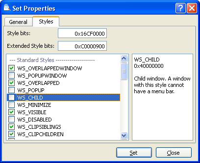

Oprócz w³aœciwoœci wybranego okna wyœwietlane s¹ tak¿e w³aœciwoœci jego klasy. Ka¿de okno posiada zestaw stylów, które wp³ywaj¹ na jego wygl¹d i zachowanie. Wiêkszoœæ standardowych kontrolek systemu Windows, jak np. przyciski i pola edycyjne, posiada indywidualne style.
Aby zmodyfikowaæ styl wybranego okna, nale¿y klikn¹æ je prawym przyciskiem myszy w widoku drzewa i wybraæ polecenie "Edytuj style okna". Zostanie otwarte okno dialogowe "Ustawienia w³aœciwoœci okna" z zaznaczon¹ kart¹ stylów. Mo¿na tak¿e wybraæ polecenie "Zmieñ w³aœciwoœci", a nastêpnie przejœæ do karty "Style".

Okno dialogowe "Zmieñ w³aœciwoœci" z wybran¹ kart¹ "Style".
| Bity stylów, Bity stylów rozszerzonych |
Mo¿na skopiowaæ bity stylów z parametrów innego okna lub wprowadziæ je rêcznie w postaci liczby dziesiêtnej lub szesnastkowej. |
| Lista stylów | Wyœwietla pe³n¹ listê stylów dostêpn¹ dla wybranego okna. Style standardowe znajduj¹ siê na wczeœniejszych pozycjach, natomiast style rozszerzone — na dalszych. W panelu po lewej stronie wyœwietlany jest opis danego stylu i jego wartoœæ. |